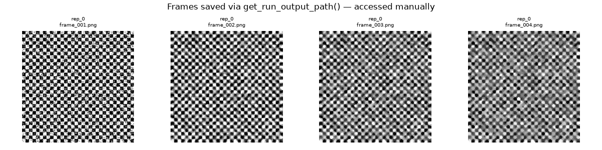
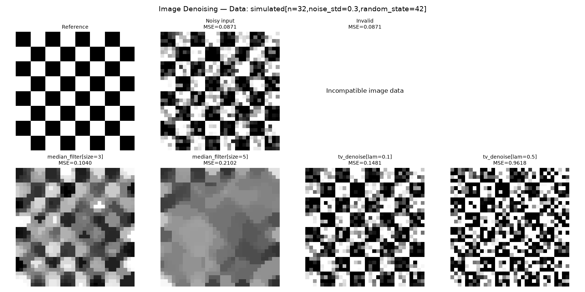
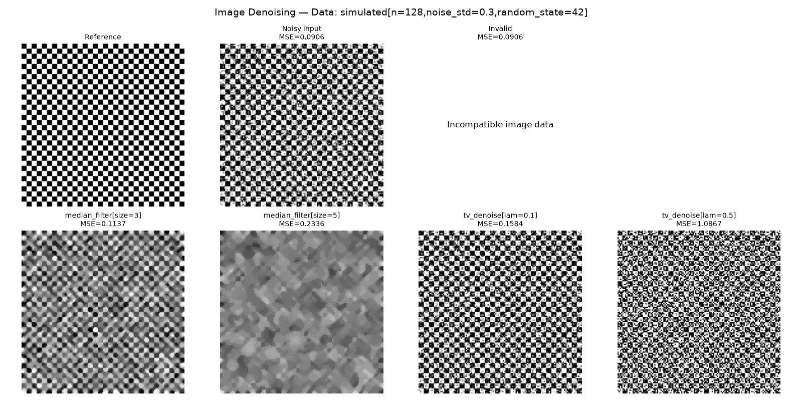

Note
Go to the end to download the full example code.
Generating and displaying images in a benchmark#
This example shows two complementary ways to work with images in a benchmark:
Saving artifacts with
get_run_output_path(): call this method fromevaluate_result(orrun) to obtain a per-run directory and write any file — PNG frames, checkpoints, logs — directly to disk.Displaying images in the HTML report with the
imageplot type: return array data fromevaluate_resultand collect it in a customBasePlotsubclass to render a visual gallery (including animated GIFs) without any manual file management.
The benchmark solves a toy 2-D image denoising problem. Iterative solvers
refine their estimate at each callback step; each intermediate reconstruction
is both saved as a PNG via get_run_output_path() and returned as an array
so the custom plot can build an animated GIF automatically.
First, we import example helpers to define the benchmark and run it in this example.
from benchopt.helpers.run_examples import ExampleBenchmark
from benchopt.helpers.run_examples import benchopt_cli
Benchmark components#
We define each component (objective, dataset, solvers, custom plot) of the benchmark:
The
Datasetsimulates a noisy checkerboard image.The
Objectivecomputes the MSE and saves each iteration as a PNG usingget_run_output_path(), which returns a per-run directory unique to the (dataset, objective, solver, repetition) combination (see Saving run artifacts).The
Solverimplement two simple iterative denoising methods: a median filter and a total variation denoising method.
OBJECTIVE = """
from benchopt import BaseObjective
import numpy as np
class Objective(BaseObjective):
name = "Image Denoising"
def set_data(self, X_true, X_noisy):
self.X_true = X_true
self.X_noisy = X_noisy
self.n_eval_ = 0
def get_objective(self):
return dict(X_noisy=self.X_noisy)
def evaluate_result(self, X_hat):
self.n_eval_ += 1
# Manually save intermediate reconstruction as a PNG file.
# get_run_output_path() returns a directory unique to this
# (dataset, objective, solver, repetition) combination.
import matplotlib.pyplot as plt
out_dir = self.get_run_output_path()
plt.imsave(
out_dir / f"frame_{self.n_eval_:03d}.png",
X_hat, cmap="gray", vmin=0, vmax=1,
)
# Return a dict of metrics (MSE) and the current frame
# for plotting in the HTML report (less manual than above).
return dict(
mse=float(np.mean((self.X_true - X_hat) ** 2)),
frame=X_hat,
)
def save_final_results(self, X_hat):
return dict(reference=self.X_true, noisy=self.X_noisy)
def get_one_result(self):
return dict(X_hat=self.X_noisy)
"""
DATASET = """
from benchopt import BaseDataset
import numpy as np
class Dataset(BaseDataset):
name = "simulated"
parameters = {"n": [32, 128], "noise_std": [0.3], "random_state": [42]}
def get_data(self):
rng = np.random.default_rng(self.random_state)
coords = np.arange(self.n)
X_true = (
(coords[:, None] // 4 + coords[None, :] // 4) % 2
).astype(float)
X_noisy = X_true + rng.normal(0, self.noise_std, X_true.shape)
return dict(X_true=X_true, X_noisy=X_noisy)
"""
SOLVER_MEDIAN = """
from benchopt import BaseSolver
from benchopt.stopping_criterion import SufficientProgressCriterion
class Solver(BaseSolver):
name = "median_filter"
parameters = {"size": [3, 5]}
stopping_criterion = SufficientProgressCriterion(
key_to_monitor = "mse", strategy="callback"
)
def set_objective(self, X_noisy):
self.X_noisy = X_noisy
def run(self, cb):
from scipy.ndimage import median_filter
self.X_hat = self.X_noisy.copy()
while cb():
self.X_hat = median_filter(self.X_hat, size=self.size)
def get_result(self):
return dict(X_hat=self.X_hat)
"""
SOLVER_TV = """
from benchopt import BaseSolver
from benchopt.stopping_criterion import SufficientProgressCriterion
import numpy as np
class Solver(BaseSolver):
name = "tv_denoise"
parameters = {"lam": [0.1, 0.5]}
stopping_criterion = SufficientProgressCriterion(
key_to_monitor = "mse", strategy="callback"
)
def set_objective(self, X_noisy):
self.X_noisy = X_noisy
def run(self, cb):
n = self.X_noisy.shape[0]
p = np.zeros((n, n, 2))
self.X_hat = self.X_noisy.copy()
tau = 0.24
while cb():
div_p = np.zeros_like(self.X_hat)
div_p[:-1, :] += p[:-1, :, 0]
div_p[1:, :] -= p[:-1, :, 0]
div_p[:, :-1] += p[:, :-1, 1]
div_p[:, 1:] -= p[:, :-1, 1]
X_upd = self.X_noisy + self.lam * div_p
grad = np.zeros((n, n, 2))
grad[:-1, :, 0] = X_upd[1:, :] - X_upd[:-1, :]
grad[:, :-1, 1] = X_upd[:, 1:] - X_upd[:, :-1]
p_new = p - tau * grad
norms = np.maximum(
1.0,
np.sqrt((p_new ** 2).sum(axis=2, keepdims=True))
)
p = p_new / norms
div_p = np.zeros_like(self.X_hat)
div_p[:-1, :] += p[:-1, :, 0]
div_p[1:, :] -= p[:-1, :, 0]
div_p[:, :-1] += p[:, :-1, 1]
div_p[:, 1:] -= p[:, :-1, 1]
self.X_hat = self.X_noisy + self.lam * div_p
def get_result(self):
return dict(X_hat=self.X_hat)
"""
benchmark = ExampleBenchmark(
name="image_denoising",
objective=OBJECTIVE,
datasets={"simulated.py": DATASET},
solvers={
"tv_denoise.py": SOLVER_TV,
"median_filter.py": SOLVER_MEDIAN,
}
)
benchmark
Run the benchmark#
We run the benchmark first. Because evaluate_result calls
get_run_output_path(), each solver’s intermediate frames are saved to
disk under <benchmark>/outputs/<run_name>/.
benchopt_cli(
f"run {benchmark.benchmark_dir} -n 5 -r 1"
)
Accessing saved artifacts#
The PNG frames saved by get_run_output_path() are now on disk and can be
read back with any standard tool. Here we display a few of them directly:
import matplotlib.pyplot as plt
png_files = sorted(
(benchmark.benchmark_dir / "outputs").glob("**/*.png")
)
print(f"{len(png_files)} PNG frames saved across all runs.")
sample = png_files[:4]
fig, axes = plt.subplots(1, len(sample), figsize=(3 * len(sample), 3))
for ax, p in zip(axes, sample):
ax.imshow(plt.imread(p), cmap="gray", vmin=0, vmax=1)
ax.set_title(f"{p.parent.name}\n{p.name}", fontsize=7)
ax.axis("off")
fig.suptitle("Frames saved via get_run_output_path() — accessed manually")
plt.tight_layout()
plt.show()

34 PNG frames saved across all runs.
This works, but requires manually navigating the output directory tree.
The image plot type below is the more convenient alternative for
embedding reconstructions directly in the benchopt HTML report.
The image plot type#
A custom BasePlot subclass with type = "image" must
return from plot() a list of dicts, each with at least:
"image"— a 2D/3D NumPy array or a list of arrays (animated GIF);"label"— text displayed below the image card.
Note that if image type is not compatible with Pillow (not an array or list of arrays),
get_metadata() may return "ncols" to control the grid layout.
Here, evaluate_result stores frame=X_hat alongside the scalar
mse. The plot collects all per-iteration frames from the
objective_frame column and passes the list to the "image" key;
benchopt plotting API converts this list of arrays to an animated GIF
automatically.
save_final_results stores the reference and noisy images only once;
so the plot reads them from the final_results column to retrieve the
reference and noisy images.
CONFIG = """
plots:
- reconstruction
- objective_curve
- bar_chart
- boxplot
- table
"""
PLOT = """
import numpy as np
from benchopt import BasePlot
class Plot(BasePlot):
name = "reconstruction"
type = "image"
options = {"dataset": ..., "objective": ...}
def plot(self, df, dataset, objective):
df = df.query(
"dataset_name == @dataset and objective_name == @objective"
)
# Get reference and noisy from final_results (only stored once)
final = df["final_results"].dropna().iloc[0]
ref = final["reference"]
noisy = final["noisy"]
mse_noisy = float(np.mean((ref - noisy) ** 2))
images = [
{"image": ref, "label": "Reference"},
{"image": noisy,
"label": f"Noisy input\\nMSE={mse_noisy:.4f}"},
# Image should be a 2D array. If incompatible, it will appear
# with a message in the plot.
{"image": "skdjf", # noisy,
"label": f"Invalid\\nMSE={mse_noisy:.4f}"},
# Returning None insert an empty slot for alignment
{"image": None},
]
for solver_name, sdf in df.groupby("solver_name"):
frames = (
sdf.sort_values("stop_val")["objective_frame"].tolist()
)
last_mse = sdf.loc[sdf["stop_val"].idxmax(), "objective_mse"]
images.append({
"image": frames, # list of arrays → animated GIF
"label": f"{solver_name}\\nMSE={last_mse:.4f}",
})
return images
def get_metadata(self, df, dataset, objective):
n = len(df.query(
"dataset_name == @dataset and objective_name == @objective"
)["solver_name"].unique())
return {
"title": f"{objective} — Data: {dataset}",
"ncols": min(n + 2, 4), # +2 for reference and noisy input
}
"""
benchmark.update(
plots={"reconstruction.py": PLOT},
extra_files={"config.yml": CONFIG},
)
Generate the HTML report#
The benchmark was already run above; benchopt plot reads the cached
results and generates the HTML report with the image plot type.
benchopt_cli(
f"plot {benchmark.benchmark_dir}"
)
In the resulting HTML page, the selected reconstruction in the Chart type dropdown shows the image grid. Each card shows an animated GIF of the solver iterating toward its final denoised image, alongside its final MSE.
Reference and noisy images are shown as static images for comparison. All arrays are embedded as base64-encoded data URIs directly in the HTML file, so the page is fully self-contained.
Note that you can also generate the plot as a static image with --no-html
option, generating a pdf file in the output directory of the benchmark.
benchopt_cli(
f"plot {benchmark.benchmark_dir} --no-html --kind reconstruction"
)


Total running time of the script: (0 minutes 6.520 seconds)